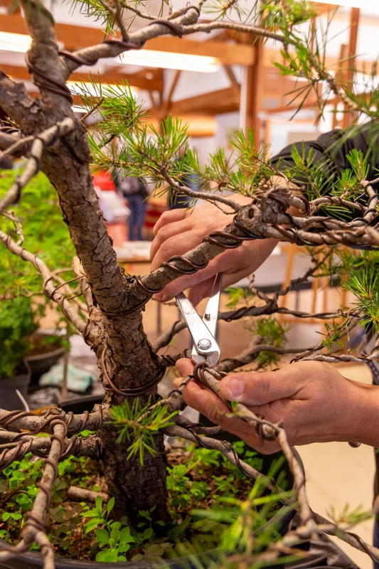

Stages & ateliers
Les ateliers
Débutants ou confirmés, en groupe ou en individuel : un programme pensé pour progresser pas à pas.
Dans une ambiance conviviale et décontractée, je vous propose des stages pour débutants, en commençant par des cours d'introduction aux bases de cet art, avec une progression pour aboutir à la création de son propre arbre.
Pour les personnes plus confirmées, les stages serviront à améliorer les connaissances techniques.
Sous forme d'ateliers pédagogiques en groupe ou individuel, nous aborderons les points suivants :

Les thèmes abordés
Formes et styles de bonsaï
Outils, matériel et substrats
Conseils d'achats pour les débutants.
Taille et pinçage
Ligature et pliage des branches
Fertilisation et arrosage
Traitements en cas de problèmes liés aux parasites.
Rempotage et taille des racines
Définition d'un projet pour l'arbre
Sa forme, sa face, l'articulation des branches, etc.
Calendrier du travail d'entretien
Les poteries
Exposer un arbre dans un Tokonoma
Conseils et entretien
Entretien des bonsaïs chez les particuliers.